IFSflorek package allows you to plot many different fractals in many different ways. It is published under the Beerware license, which means you can do whatever you want with the package and it’s code, and if we should ever meet you owe us a beer. Ok, to be honest, you owe us a beer provided you think our package is worth it.
The package uses Iterated Function System (IFS for short) to define fractals and deterministic algorithm do draw them. The idea is as follows: a fractal is defined by a list of \(n\) contraction mappings (we will simply call them functions in this vignette). To draw it, we choose a starting point and in the first iteration we apply all the functions to it, resulting in a set of \(n\) points. In the second iteration, we apply all the functions to all the points from the previous iteration, and so on. When we reach the desired depth - that is, the desired number of iterations - we stop and plot all the points from all the iterations.
Let’s start with some simple example - we will draw so called Heighway Dragon. It’s a simple fractal, because you need only two functions to create it. The functions are as follows:
scale_and_rotate1 <- function(x) {
c(0.5*x[1] - 0.5*x[2], 0.5*x[1] + 0.5*x[2])
}
scale_and_rotate2 <- function(x) {
c(-0.5*x[1] - 0.5*x[2] + 1, 0.5*x[1] - 0.5*x[2])
}Note that the functions should take a vector of two elements as an argument and return a vector of two elements.
Now we create an object of class IFS with these functions using createIFS function from our IFSflorek package. Firstly, of course, we need to load the package.
library(IFSflorek)
heighway_dragon <- createIFS(scale_and_rotate1, scale_and_rotate2)Next, we can plot it simply by using plot function:
plot(heighway_dragon)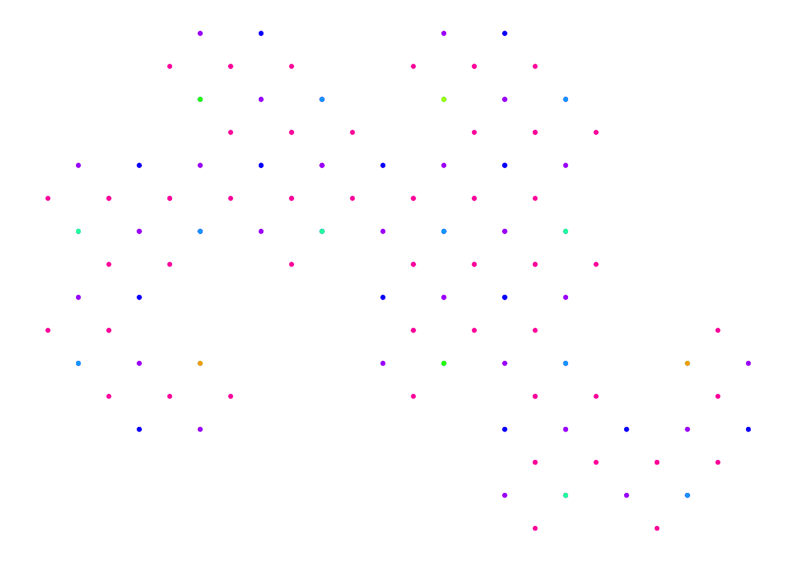
If we want to see more iterations, and hence more points, we need to increase depth argument (the default value is 8):
plot(heighway_dragon, depth = 13)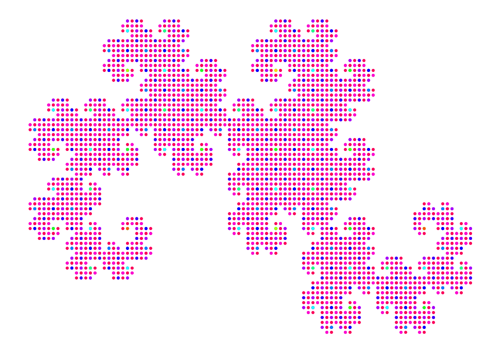
By default the points are coloured according to the iteration they were created in using colours created by rainbow function. You can change the palette of colours with argument colour_palette. It can be a function that takes as an argument a number n and returns a list of n colours (for example, heat.colors function or the default rainbow function; see ?rainbow for more palettes available in R); it can be simply a list of n colours or one single colour. Note that iterations are coloured in reversed order, that is, if we draw two iterations with colour_palette = c("red", "blue") the points created in the second iteration will be red. You can change that behaviour by setting reverse = FALSE. For example:
plot(heighway_dragon, depth = 10, colour_palette = "black")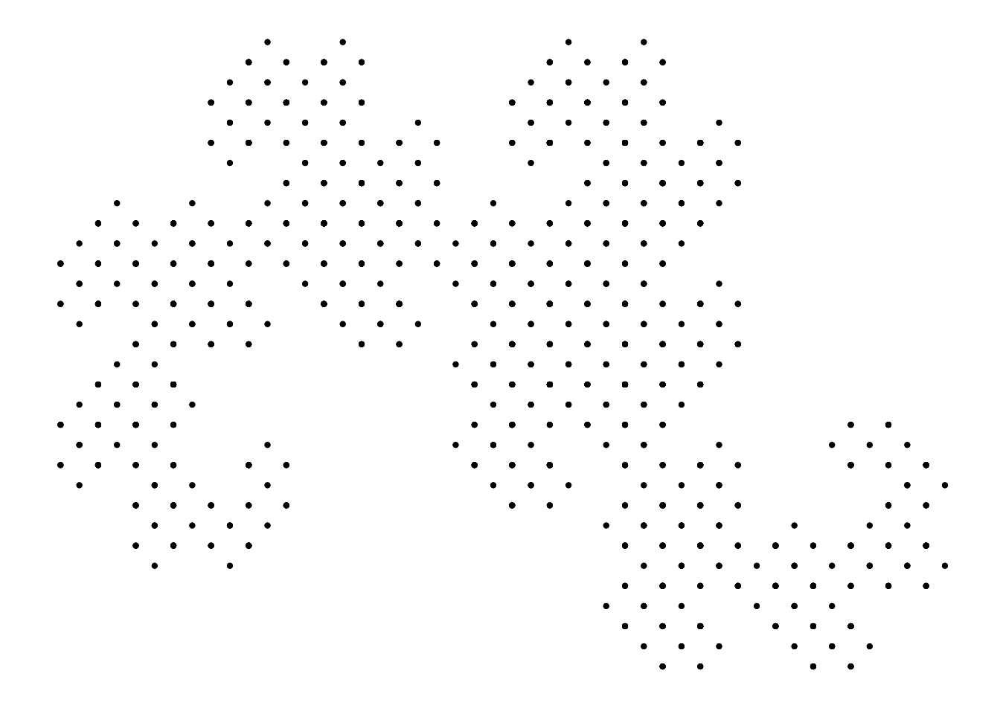
plot(heighway_dragon, depth = 10, colour_palette = heat.colors)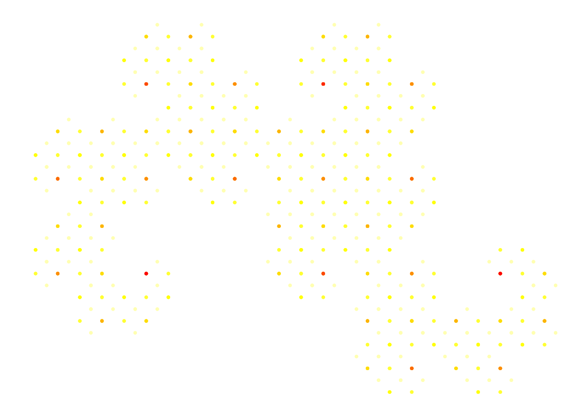
There are some examples included in our package that are ready to use. You can list them with function data(package = "IFSflorek").
data(package = "IFSflorek")The examples are IFS objects representing some well-known fractals. You can draw them using plot function or read more about them in the documentation, for example:
You can also use function examplesIFS() to generate ready pictures. You just need to provide the name of the fractal and optionally the desired depth of plotting. All the fractals that are available as the additional data are also available through examplesIFS() function.
exampleIFS("sierpinski", 7)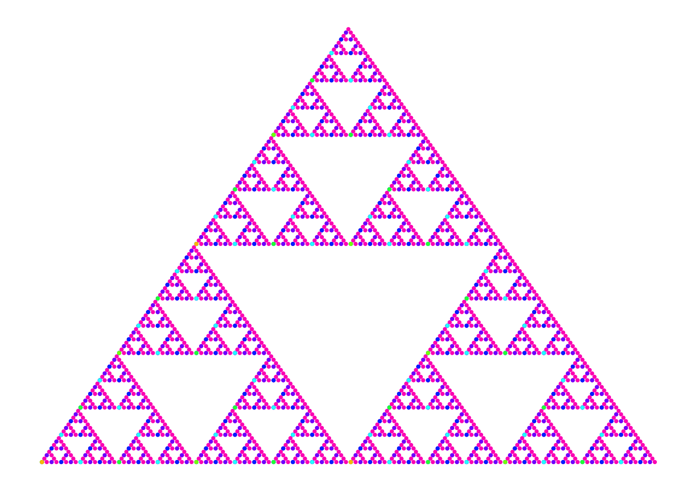
Many fractals are created using functions of the following form:
\(f(x, y) = (ax + by + e, cx + dy + f)\)
And so quite often the fractals are defined by simply providing the coefficients \((a, b, c, d, e, f)\) of the functions. To simplify implementation of such fractals, we’ve created function createIFS_from_coefficients. It takes a matrix of coefficients and returns an IFS object with functions defined using these coefficients. The matrix should have six columns; each row represents coefficients for different function. Below we create Barnsley Fern using this method. Firstly we create matrix of coefficients:
matrix_of_coefficients <- matrix(c(
0.00, 0.00, 0.00, 0.16, 0, 0.00,
0.85, 0.04, -0.04, 0.85, 0, 1.60,
0.20, -0.26, 0.23, 0.22, 0, 1.60,
-0.15, 0.28, 0.26, 0.24, 0, 0.44
), ncol = 6, byrow = TRUE)
colnames(matrix_of_coefficients) <- c("a", "b", "c", "d", "e", "f")
matrix_of_coefficients## a b c d e f
## [1,] 0.00 0.00 0.00 0.16 0 0.00
## [2,] 0.85 0.04 -0.04 0.85 0 1.60
## [3,] 0.20 -0.26 0.23 0.22 0 1.60
## [4,] -0.15 0.28 0.26 0.24 0 0.44Then, we simply provide the matrix to the function createIFS_from_coefficients. Et voila!
barnsley_fern <- createIFS_from_coefficients(matrix_of_coefficients)
plot(barnsley_fern, colour_palette = c("green", "red"))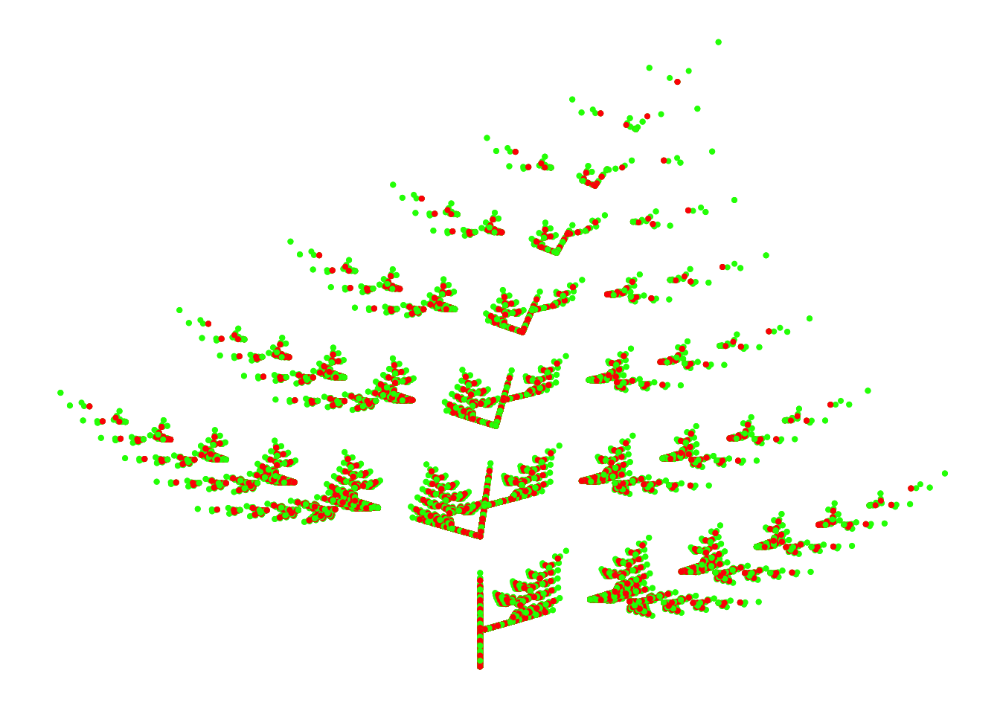
In IFSflorek one can generate infinite number of random fractals, using randomIFS() function. User simply tells it how many functions to generate, and then the function chooses random coefficients for each of them, so that all of them will be contractive mappings. The default number of functions is 4. Below we illustrate some examples that we find particularly pleasant. In the latter ones we play with the colour palette using RColorBrewer library to get some nice results.
set.seed(16)
random_fractal <- randomIFS()
plot(random_fractal)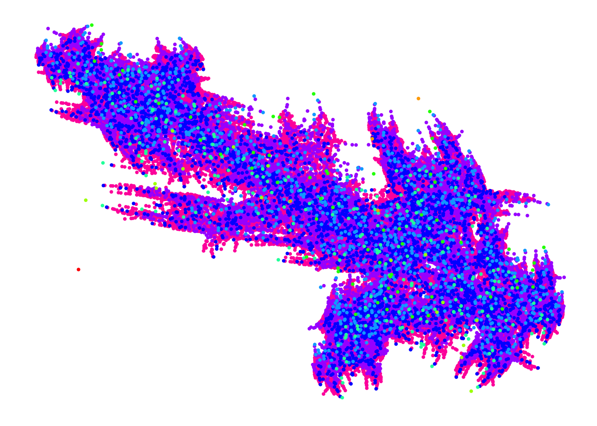
set.seed(84)
random_fractal <- randomIFS()
plot(random_fractal, colour_palette = topo.colors)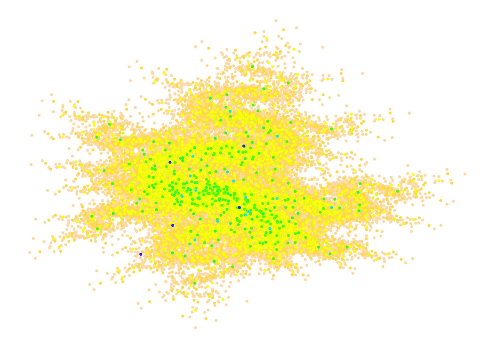
set.seed(25)
random_fractal <- randomIFS(3)
plot(random_fractal, depth = 9, colour_palette = cm.colors)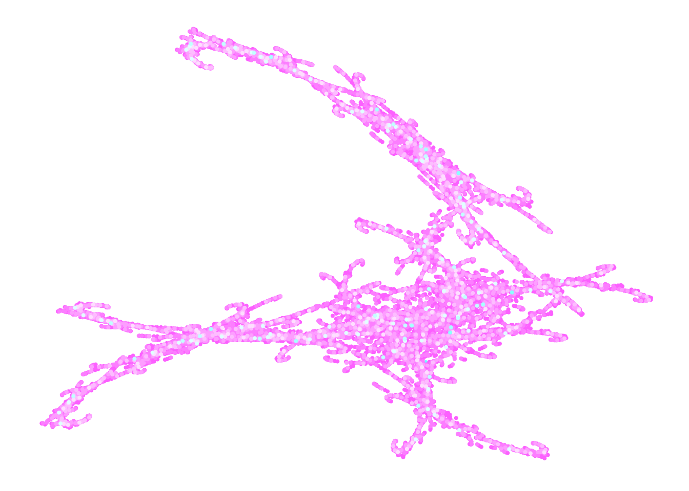
set.seed(48)
random_fractal <- randomIFS()
plot(random_fractal, colour_palette = heat.colors, reverse = FALSE)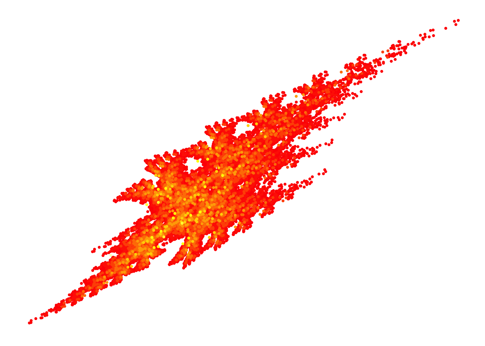
set.seed(132)
random_fractal <- randomIFS()
plot(random_fractal, colour_palette = "lightblue")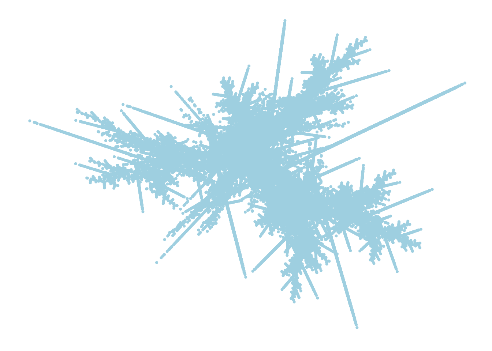
set.seed(133)
random_fractal <- randomIFS()
plot(random_fractal, reverse = FALSE)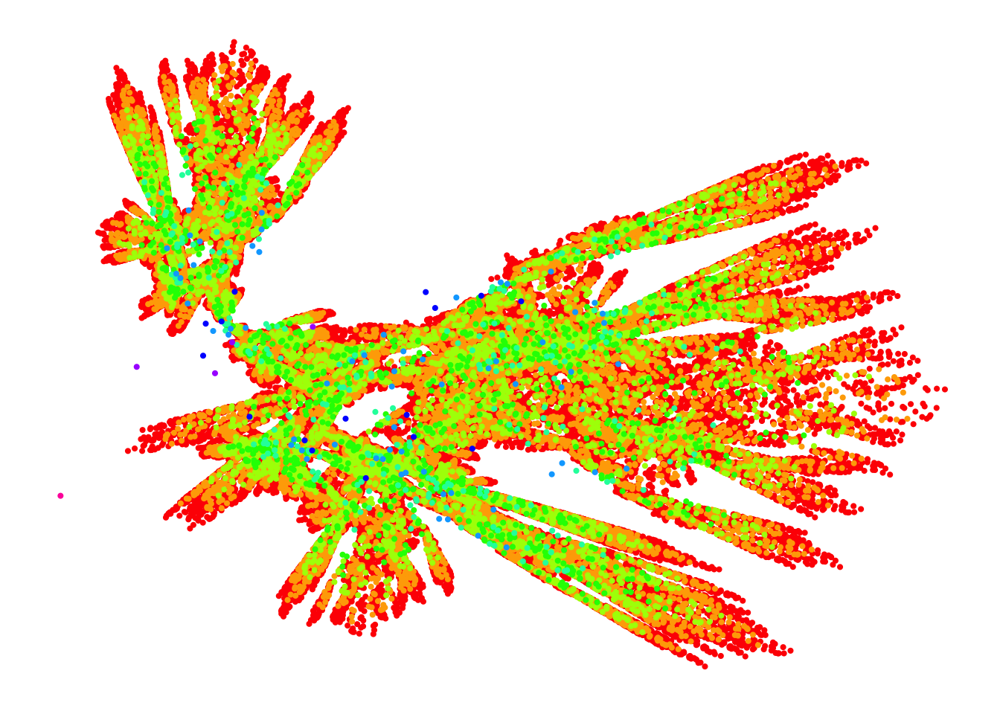
if (require(RColorBrewer, quietly = TRUE)) {
greens <- function(n) {
brewer.pal(n, "Greens")
}
set.seed(142)
random_fractal <- randomIFS()
print(plot(random_fractal, colour_palette = greens))
tree_colours <- function(n) {
colours <- colorRampPalette(c("brown", "brown2", "green"))
colours(n)
}
set.seed(37)
random_fractal <- randomIFS()
print(plot(random_fractal, depth = 9, colour_palette = tree_colours))
}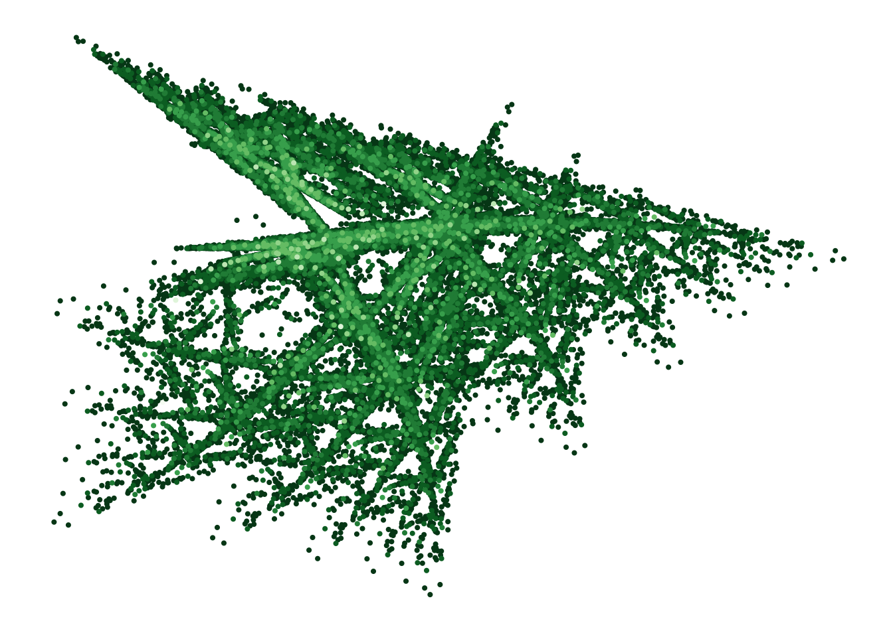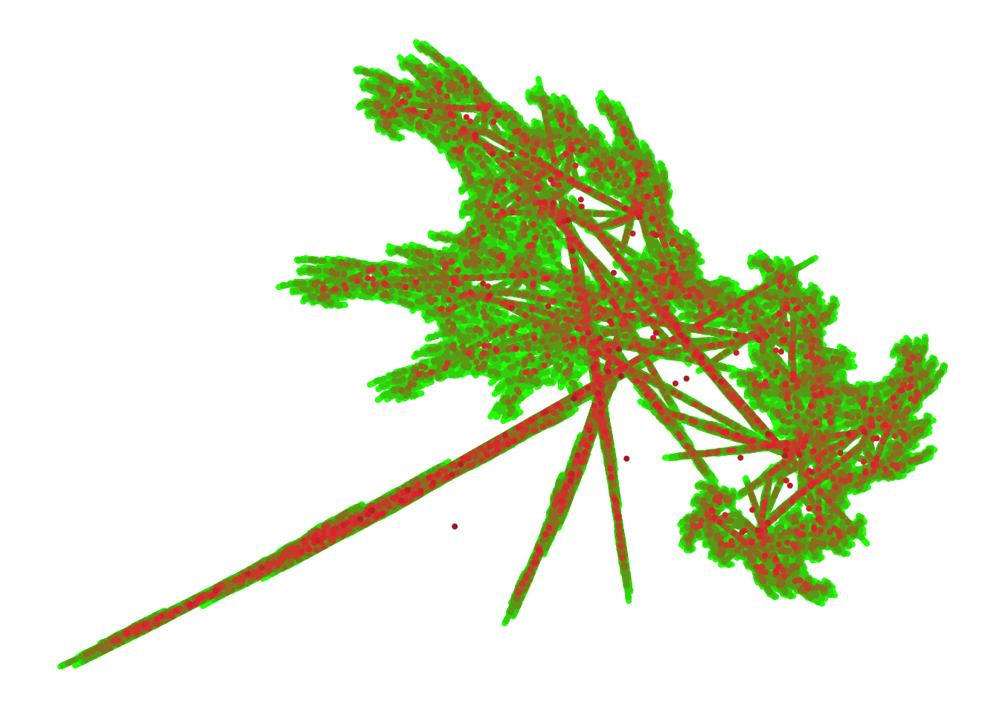
If you need any more details, please refer to the documentation.
Have fun drawing fractals!